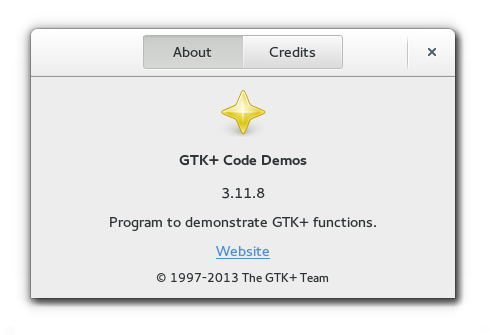

Gtk.AboutDialog
Example
Methods
| Inherited: | Gtk.Dialog (14), Gtk.Window (117), Gtk.Bin (1), Gtk.Container (27), Gtk.Widget (256), GObject.Object (33), Gtk.Buildable (10) |
|---|
| static | new() |
| add_credit_section(section_name, people) | |
| get_artists() | |
| get_authors() | |
| get_comments() | |
| get_copyright() | |
| get_documenters() | |
| get_license() | |
| get_license_type() | |
| get_logo() | |
| get_logo_icon_name() | |
| get_program_name() | |
| get_translator_credits() | |
| get_version() | |
| get_website() | |
| get_website_label() | |
| get_wrap_license() | |
| set_artists(artists) | |
| set_authors(authors) | |
| set_comments(comments) | |
| set_copyright(copyright) | |
| set_documenters(documenters) | |
| set_license(license) | |
| set_license_type(license_type) | |
| set_logo(logo) | |
| set_logo_icon_name(icon_name) | |
| set_program_name(name) | |
| set_translator_credits(translator_credits) | |
| set_version(version) | |
| set_website(website) | |
| set_website_label(website_label) | |
| set_wrap_license(wrap_license) |
Virtual Methods
| Inherited: | Gtk.Dialog (2), Gtk.Window (5), Gtk.Container (10), Gtk.Widget (82), GObject.Object (7), Gtk.Buildable (10) |
|---|
| do_activate_link(uri) |
Properties
| Inherited: | Gtk.Dialog (1), Gtk.Window (33), Gtk.Container (3), Gtk.Widget (38) |
|---|
| Name | Type | Flags | Short Description |
|---|---|---|---|
| artists | [str] | r/w | List of people who have contributed artwork to the program |
| authors | [str] | r/w | List of authors of the program |
| comments | str | r/w | Comments about the program |
| copyright | str | r/w | Copyright information for the program |
| documenters | [str] | r/w | List of people documenting the program |
| license | str | r/w | The license of the program |
| license-type | Gtk.License | r/w | The license type of the program |
| logo | GdkPixbuf.Pixbuf | r/w | A logo for the about box. If this is not set, it defaults to Gtk.Window.get_default_icon_list () |
| logo-icon-name | str | r/w | A named icon to use as the logo for the about box. |
| program-name | str | r/w | The name of the program. If this is not set, it defaults to GLib.get_application_name () |
| translator-credits | str | r/w | Credits to the translators. This string should be marked as translatable |
| version | str | r/w | The version of the program |
| website | str | r/w | The URL for the link to the website of the program |
| website-label | str | r/w | The label for the link to the website of the program |
| wrap-license | bool | r/w | Whether to wrap the license text. |
Style Properties
| Inherited: | Gtk.Dialog (4), Gtk.Window (2), Gtk.Widget (17) |
|---|
Signals
| Inherited: | Gtk.Dialog (2), Gtk.Window (5), Gtk.Container (4), Gtk.Widget (69), GObject.Object (1) |
|---|
| Name | Short Description |
|---|---|
| activate-link | The signal which gets emitted to activate a URI. |
Fields
| Inherited: | Gtk.Dialog (1), Gtk.Window (1), Gtk.Bin (1), Gtk.Container (1), Gtk.Widget (1), GObject.InitiallyUnowned (3), GObject.Object (3) |
|---|
| Name | Type | Access | Description |
|---|---|---|---|
| parent_instance | Gtk.Dialog | r |
Class Details
- class Gtk.AboutDialog(title=None, parent=None, flags=0, buttons=None, _buttons_property=None, **kwds)
Bases: Gtk.Dialog
The Gtk.AboutDialog offers a simple way to display information about a program like its logo, name, copyright, website and license. It is also possible to give credits to the authors, documenters, translators and artists who have worked on the program. An about dialog is typically opened when the user selects the `About` option from the `Help` menu. All parts of the dialog are optional.
About dialogs often contain links and email addresses. Gtk.AboutDialog displays these as clickable links. By default, it calls Gtk.show_uri () when a user clicks one. The behaviour can be overridden with the Gtk.AboutDialog ::activate-link signal.
To specify a person with an email address, use a string like “Edgar Allan Poe ”. To specify a website with a title, use a string like “GTK+ team http://www.gtk.org”.
To make constructing a Gtk.AboutDialog as convenient as possible, you can use the function Gtk.show_about_dialog () which constructs and shows a dialog and keeps it around so that it can be shown again.
Note that GTK+ sets a default title of `_(“About %s”)` on the dialog window (where \%s is replaced by the name of the application, but in order to ensure proper translation of the title, applications should set the title property explicitly when constructing a Gtk.AboutDialog, as shown in the following example:
<!-- language="C" --> gtk_show_about_dialog (NULL, "program-name", "ExampleCode", "logo", example_logo, "title" _("About ExampleCode"), NULL);
It is also possible to show a Gtk.AboutDialog like any other Gtk.Dialog, e.g. using Gtk.Dialog.run (). In this case, you might need to know that the “Close” button returns the Gtk.ResponseType.CANCEL response id.
- static new()
Returns: a newly created Gtk.AboutDialog Return type: Gtk.Widget Creates a new Gtk.AboutDialog.
New in version 2.6.
- add_credit_section(section_name, people)
Parameters: Creates a new section in the Credits page.
New in version 3.4.
- get_artists()
Returns: A None-terminated string array containing the artists. The array is owned by the about dialog and must not be modified. Return type: [str] Returns the string which are displayed in the artists tab of the secondary credits dialog.
New in version 2.6.
Returns: A None-terminated string array containing the authors. The array is owned by the about dialog and must not be modified. Return type: [str] Returns the string which are displayed in the authors tab of the secondary credits dialog.
New in version 2.6.
- get_comments()
Returns: The comments. The string is owned by the about dialog and must not be modified. Return type: str Returns the comments string.
New in version 2.6.
- get_copyright()
Returns: The copyright string. The string is owned by the about dialog and must not be modified. Return type: str Returns the copyright string.
New in version 2.6.
- get_documenters()
Returns: A None-terminated string array containing the documenters. The array is owned by the about dialog and must not be modified. Return type: [str] Returns the string which are displayed in the documenters tab of the secondary credits dialog.
New in version 2.6.
- get_license()
Returns: The license information. The string is owned by the about dialog and must not be modified. Return type: str Returns the license information.
New in version 2.6.
- get_license_type()
Returns: a Gtk.License value Return type: Gtk.License Retrieves the license set using Gtk.AboutDialog.set_license_type ()
New in version 3.0.
- get_logo()
Returns: the pixbuf displayed as logo. The pixbuf is owned by the about dialog. If you want to keep a reference to it, you have to call GObject.Object.ref () on it. Return type: GdkPixbuf.Pixbuf Returns the pixbuf displayed as logo in the about dialog.
New in version 2.6.
- get_logo_icon_name()
Returns: the icon name displayed as logo. The string is owned by the dialog. If you want to keep a reference to it, you have to call GLib.strdup () on it. Return type: str Returns the icon name displayed as logo in the about dialog.
New in version 2.6.
- get_program_name()
Returns: The program name. The string is owned by the about dialog and must not be modified. Return type: str Returns the program name displayed in the about dialog.
New in version 2.12.
- get_translator_credits()
Returns: The translator credits string. The string is owned by the about dialog and must not be modified. Return type: str Returns the translator credits string which is displayed in the translators tab of the secondary credits dialog.
New in version 2.6.
- get_version()
Returns: The version string. The string is owned by the about dialog and must not be modified. Return type: str Returns the version string.
New in version 2.6.
- get_website()
Returns: The website URL. The string is owned by the about dialog and must not be modified. Return type: str Returns the website URL.
New in version 2.6.
- get_website_label()
Returns: The label used for the website link. The string is owned by the about dialog and must not be modified. Return type: str Returns the label used for the website link.
New in version 2.6.
- get_wrap_license()
Returns: True if the license text is wrapped Return type: bool Returns whether the license text in about is automatically wrapped.
New in version 2.8.
- set_artists(artists)
Parameters: artists ([str]) – a None-terminated array of strings Sets the strings which are displayed in the artists tab of the secondary credits dialog.
New in version 2.6.
Parameters: authors ([str]) – a None-terminated array of strings Sets the strings which are displayed in the authors tab of the secondary credits dialog.
New in version 2.6.
- set_comments(comments)
Parameters: comments (str or None) – a comments string Sets the comments string to display in the about dialog. This should be a short string of one or two lines.
New in version 2.6.
- set_copyright(copyright)
Parameters: copyright (str or None) – the copyright string Sets the copyright string to display in the about dialog. This should be a short string of one or two lines.
New in version 2.6.
- set_documenters(documenters)
Parameters: documenters ([str]) – a None-terminated array of strings Sets the strings which are displayed in the documenters tab of the secondary credits dialog.
New in version 2.6.
- set_license(license)
Parameters: license (str or None) – the license information or None Sets the license information to be displayed in the secondary license dialog. If license is None, the license button is hidden.
New in version 2.6.
- set_license_type(license_type)
Parameters: license_type (Gtk.License) – the type of license Sets the license of the application showing the about dialog from a list of known licenses.
This function overrides the license set using Gtk.AboutDialog.set_license ().
New in version 3.0.
- set_logo(logo)
Parameters: logo (GdkPixbuf.Pixbuf or None) – a GdkPixbuf.Pixbuf, or None Sets the pixbuf to be displayed as logo in the about dialog. If it is None, the default window icon set with Gtk.Window.set_default_icon () will be used.
New in version 2.6.
- set_logo_icon_name(icon_name)
Parameters: icon_name (str or None) – an icon name, or None Sets the pixbuf to be displayed as logo in the about dialog. If it is None, the default window icon set with Gtk.Window.set_default_icon () will be used.
New in version 2.6.
- set_program_name(name)
Parameters: name (str) – the program name Sets the name to display in the about dialog. If this is not set, it defaults to GLib.get_application_name ().
New in version 2.12.
- set_translator_credits(translator_credits)
Parameters: translator_credits (str or None) – the translator credits Sets the translator credits string which is displayed in the translators tab of the secondary credits dialog.
The intended use for this string is to display the translator of the language which is currently used in the user interface. Using gettext(), a simple way to achieve that is to mark the string for translation:
<!-- language="C" --> gtk_about_dialog_set_translator_credits (about, _("translator-credits"));
It is a good idea to use the customary msgid “translator-credits” for this purpose, since translators will already know the purpose of that msgid, and since Gtk.AboutDialog will detect if “translator-credits” is untranslated and hide the tab.
New in version 2.6.
- set_version(version)
Parameters: version (str or None) – the version string Sets the version string to display in the about dialog.
New in version 2.6.
- set_website(website)
Parameters: website (str or None) – a URL string starting with “http://” Sets the URL to use for the website link.
New in version 2.6.
- set_website_label(website_label)
Parameters: website_label (str) – the label used for the website link Sets the label to be used for the website link.
New in version 2.6.
- set_wrap_license(wrap_license)
Parameters: wrap_license (bool) – whether to wrap the license Sets whether the license text in about is automatically wrapped.
New in version 2.8.
Signal Details
- Gtk.AboutDialog.signals.activate_link(about_dialog, uri)
Signal Name: activate-link
Flags: Parameters: - about_dialog (Gtk.AboutDialog) – The object which received the signal
- uri (str) – the URI that is activated
Returns: True if the link has been activated
Return type: The signal which gets emitted to activate a URI. Applications may connect to it to override the default behaviour, which is to call Gtk.show_uri ().
New in version 2.24.
Property Details
- Gtk.AboutDialog.props.artists
Name: artists Type: [str] Default Value: [] Flags: r/w The people who contributed artwork to the program, as a None-terminated array of strings. Each string may contain email addresses and URLs, which will be displayed as links, see the introduction for more details.
New in version 2.6.
Name: authors Type: [str] Default Value: [] Flags: r/w The authors of the program, as a None-terminated array of strings. Each string may contain email addresses and URLs, which will be displayed as links, see the introduction for more details.
New in version 2.6.
- Gtk.AboutDialog.props.comments
Name: comments Type: str Default Value: None Flags: r/w Comments about the program. This string is displayed in a label in the main dialog, thus it should be a short explanation of the main purpose of the program, not a detailed list of features.
New in version 2.6.
- Gtk.AboutDialog.props.copyright
Name: copyright Type: str Default Value: None Flags: r/w Copyright information for the program.
New in version 2.6.
- Gtk.AboutDialog.props.documenters
Name: documenters Type: [str] Default Value: [] Flags: r/w The people documenting the program, as a None-terminated array of strings. Each string may contain email addresses and URLs, which will be displayed as links, see the introduction for more details.
New in version 2.6.
- Gtk.AboutDialog.props.license
Name: license Type: str Default Value: None Flags: r/w The license of the program. This string is displayed in a text view in a secondary dialog, therefore it is fine to use a long multi-paragraph text. Note that the text is only wrapped in the text view if the “wrap-license” property is set to True ; otherwise the text itself must contain the intended linebreaks. When setting this property to a non-None value, the Gtk.AboutDialog :license-type property is set to Gtk.License.CUSTOM as a side effect.
New in version 2.6.
- Gtk.AboutDialog.props.license_type
Name: license-type Type: Gtk.License Default Value: Gtk.License.UNKNOWN Flags: r/w The license of the program, as a value of the Gtk.License enumeration.
The Gtk.AboutDialog will automatically fill out a standard disclaimer and link the user to the appropriate online resource for the license text.
If Gtk.License.UNKNOWN is used, the link used will be the same specified in the Gtk.AboutDialog :website property.
If Gtk.License.CUSTOM is used, the current contents of the Gtk.AboutDialog :license property are used.
For any other Gtk.License value, the contents of the Gtk.AboutDialog :license property are also set by this property as a side effect.
New in version 3.0.
- Gtk.AboutDialog.props.logo
Name: logo Type: GdkPixbuf.Pixbuf Default Value: None Flags: r/w A logo for the about box. If it is None, the default window icon set with Gtk.Window.set_default_icon () will be used.
New in version 2.6.
- Gtk.AboutDialog.props.logo_icon_name
Name: logo-icon-name Type: str Default Value: 'image-missing' Flags: r/w A named icon to use as the logo for the about box. This property overrides the Gtk.AboutDialog :logo property.
New in version 2.6.
- Gtk.AboutDialog.props.program_name
Name: program-name Type: str Default Value: None Flags: r/w The name of the program. If this is not set, it defaults to GLib.get_application_name ().
New in version 2.12.
- Gtk.AboutDialog.props.translator_credits
Name: translator-credits Type: str Default Value: None Flags: r/w Credits to the translators. This string should be marked as translatable. The string may contain email addresses and URLs, which will be displayed as links, see the introduction for more details.
New in version 2.6.
- Gtk.AboutDialog.props.version
Name: version Type: str Default Value: None Flags: r/w The version of the program.
New in version 2.6.
- Gtk.AboutDialog.props.website
Name: website Type: str Default Value: None Flags: r/w The URL for the link to the website of the program. This should be a string starting with “http://.
New in version 2.6.